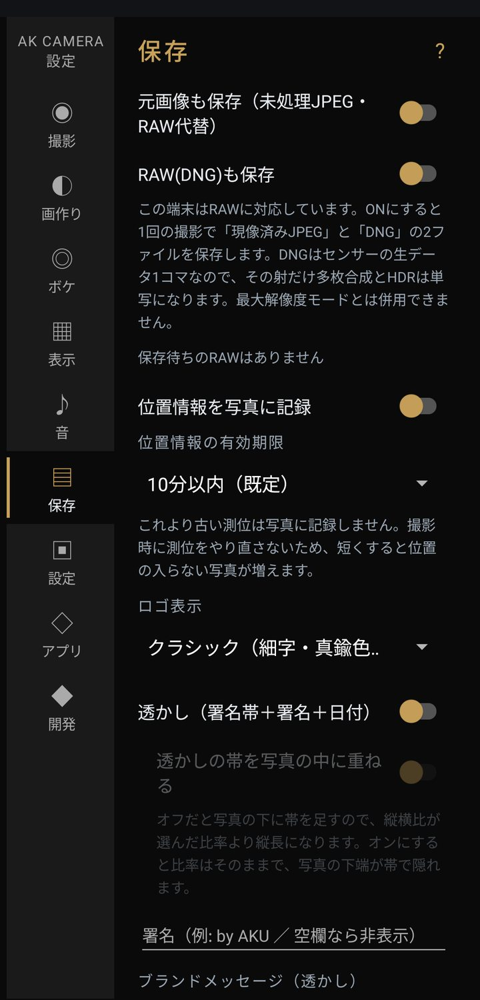

設定：保存

保存されるファイルと、写真に入れる文字。
- 元画像も保存（未処理JPEG・RAW代替）初期値 OFF
- ルックや合成をかける前の JPEG を、同じ名前に
_origを付けて一緒に保存します。あとで自分で仕上げたい人向けです。容量は倍近く使います。 - RAW(DNG)も保存初期値 OFF
- RAW に対応した端末で ON にすると、1回の撮影で JPEG と DNG の2つを保存します。 DNG はセンサーの生データ1コマなので、その回だけ合成と HDR は使いません。最大解像度とは一緒に使えません。 対応を確認できていない端末では、その旨が表示され、ON にしても JPEG だけになります。 アプリが途中で終わって書き終えた DNG が残ったときは、この「保存」タブに保存待ちの件数が出て、次に撮った写真の保存の後にギャラリーへ追加します。 追加できない DNG が残って保存待ちが埋まったときは「追加できないRAWを削除」で消せます（消す前に確認します）。
- 位置情報を写真に記録初期値 OFF
- ON にすると、何に使うかの説明のあとで Android の位置情報の許可を求めます。記録先は写真の中（EXIF）だけで、アプリから外へは送りません。
- 位置情報の有効期限初期値 10分以内
- 制限なし / 1分以内 / 2分以内 / 5分以内 / 10分以内 / 30分以内 / 60分以内 撮影のたびに測り直すのではなく、端末が持っている直近の位置を使います。これより古い位置は記録しません。短くするほど、位置の入らない写真が増えます。
- 透かし（署名帯＋署名＋日付）初期値 OFF
- 写真の下に、端末名・日付・署名などを入れた帯を付けます。透かしを入れたいときは、まずこれを ON にします。
- 透かしの帯を写真の中に重ねる初期値 OFF
- 上の「透かし」が ON のときだけ効きます（OFF のあいだは薄く表示されます）。 OFF だと写真の下に帯を足すので、選んだ比率より縦長になります。ON にすると比率はそのままで、写真の下の端が帯で隠れます。
- ロゴ表示初期値 クラシック
- 帯に入れる AK CAMERA のロゴの書体。クラシック / ボールド / ワイド / セリフ / 非表示。
- 署名
- 帯に入れる名前（例: by AKU）。空欄なら出しません。
- ブランドメッセージ初期値 PURE PHOTOGRAPHY.
- 帯に入れる一言。思い出のコメントを入れても。
- 透かしの要素と配置
- ロゴ・ブランドメッセージ・端末名・署名・日付・時刻・撮影情報を、それぞれ ON/OFF と 左 / 中央 / 右 で選べます。 初期値は、右にロゴとブランドメッセージ、中央に日付と時刻、左に端末名・署名・撮影情報。
- 署名帯の色初期値 フィルムの余白
- フィルムの余白 / アイボリー / 温かみのある白 / 純白 / チャコール / カスタム（R・G・B で指定）。